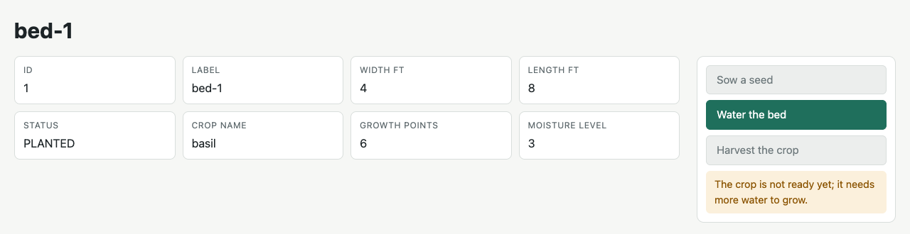
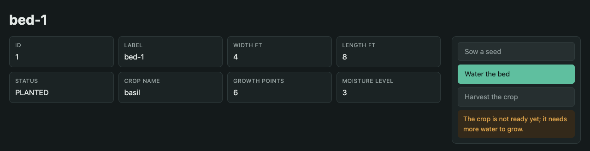
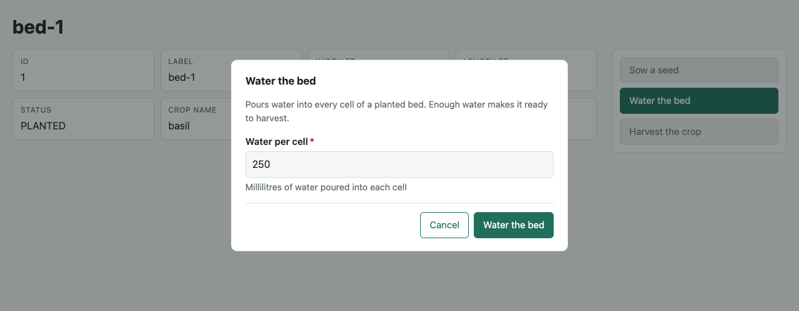
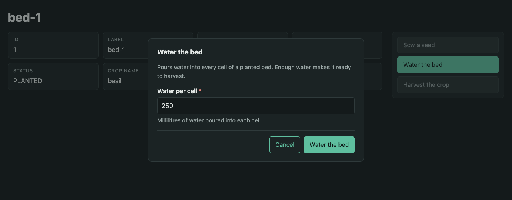
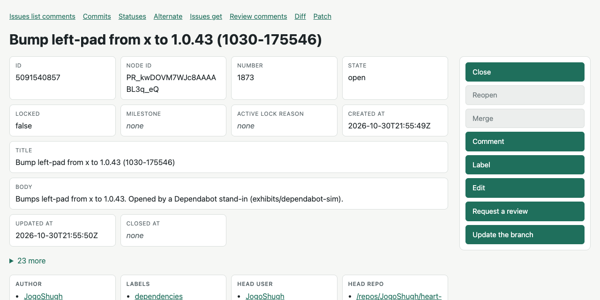
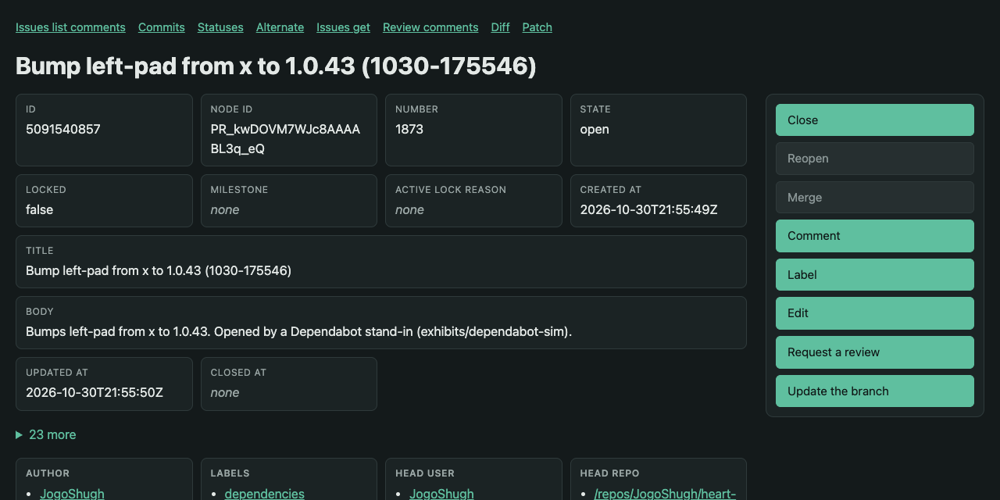

The bed lives at one address, /beds/1. What comes back depends on what the client says it can read. A browser gets a page with buttons. An agent that knows HAL-FORMS gets templates. An agent that speaks HEART's own HAL Schema Forms gets JSON Schema, integrity hashes, and affordances it can cache for a year. Every exchange below was captured from the running garden server on October 30, 2026.
“When I say hypertext, I mean the simultaneous presentation of information and controls such that the information becomes the affordance through which the user (or automaton) obtains choices and selects actions.”
Roy T. Fielding, replying in the comments of “REST APIs must be hypertext-driven”, October 20, 2008
“The user (or automaton)”: one resource has to serve both. Content negotiation is how one server does it without two APIs. Pick what the client sends; the request and the answer's headers are the real ones, with the token hidden.
| Accept sent | Answer |
|---|---|
text/html,…,*/*;q=0.8What every browser sends: HTML named above both HEART types. | HTML |
application/prs.hal-forms+jsonNamed outright. | HAL-FORMS |
application/hal+jsonNamed outright; Prefer picks the rung. | HAL Schema Forms |
application/hal+json, text/html;q=0.5Highest q wins: this agent prefers HEART. | HAL Schema Forms |
*/*A wildcard never picks HTML, so a client that names nothing still gets controls it can act on: the default dialect. Captured: HTTP/1.1 200 OK, application/prs.hal-forms+json. | HAL-FORMS |
image/pngNothing the server produces. Captured: HTTP/1.1 406 Not Acceptable. | 406 |
Accept-Profile can name a HEART profile when Accept says only */*. Every answer lists what it varies by in Vary, so a cache never hands HTML to an agent or JSON to a browser.
“The media type identifies a specification that defines how a representation is to be processed. That is out-of-band information (all communication is dependent on some prior knowledge). What you are missing is that each representation contains the specific instructions for interfacing with a given service, provided in-band. The media type is a generic processing model that every agent can learn if there aren’t too many of them (hence the need for standards). The representation is specific to the application being performed by the agent. Each representation therefore provides the transitions that are available at that point in the application.”
Roy T. Fielding, comment of October 23, 2008, on the same post
A browser knows one media type and nothing about gardens. It gets the bed's state as tiles that fill the screen, and one button per act in the type's own order, in a column beside it. Water the bed is offered. Sow a seed and Harvest the crop are greyed, and pressing one shows the server's reason. heart-core renders the page from the same declaration as the JSON, so the two always offer the same acts.
“Think of it in terms of the Web. How many Web browsers are aware of the distinction between an online-banking resource and a Wiki resource? None of them. They don’t need to be aware of the resource types. What they need to be aware of is the potential state transitions — the links and forms — and what semantics/actions are implied by traversing those links. A browser represents them as distinct UI controls so that a user can see potential transitions and anticipate the effect of chosen actions.”
Roy T. Fielding, comment of October 20, 2008
HTTP/1.1 200 OK Content-Type: text/html;charset=UTF-8 ETag: "seq-3.html.L0.5a5247872fd134d6" Cache-Control: no-cache Vary: Accept Asked again with If-None-Match: HTTP/1.1 304 Not Modified ETag: "seq-3.html.L0.5a5247872fd134d6" Cache-Control: no-cache Vary: Accept
The page has its own ETag, tagged html, and is revalidated on every visit like any HEART resource; asked again with it, it answers 304 Not Modified. It sends no profile link: HTML is an on-ramp outside the HEART profile, as plain JSON is.
<class="t">title>bed-1</class="t">title> <class="t">link rel="stylesheet" href="/heart/assets/heart.f49413dd9009.css"> <class="t">script defer src="/heart/assets/htmx-2.0.4.min.e209dda5c823.js"> </class="t">script> <class="t">script defer src="/heart/assets/ajv2020-8.17.1.min.d2f97a24636c.js"> </class="t">script> <class="t">script defer src="/heart/assets/heart-forms.e3ecd1103c5a.js"> </class="t">script> </class="t">head> <class="t">body hx-headers='{"Accept": "text/html"}'> <class="t">main id="resource" data-etag=""seq-3.html.L0.5a5247872fd134d6""> <class="t">h1>bed-1</class="t">h1> <class="t">div class="layout"> <class="t">div class="info"> <class="t">dl class="state"> <class="t">div class="member"> <class="t">dt title="id">Id</class="t">dt> <class="t">dd>1</class="t">dd> </class="t">div> <class="t">div class="member"> <class="t">dt title="label">Label</class="t">dt> <class="t">dd>bed-1</class="t">dd> </class="t">div> <!-- … six more members … --> </class="t">dl> </class="t">div> <class="t">aside class="side" aria-label="Acts"> <class="t">div class="acts" role="toolbar" aria-label="Acts"> <class="t">button type="button" class="act" data-rel="garden:sow-seed" aria-disabled="true" aria-describedby="why-garden-sow-seed">Sow a seed</class="t">button> <class="t">span class="why" id="why-garden-sow-seed" hidden>The bed is already planted.</class="t">span> <class="t">button type="button" class="act" data-rel="garden:water-cell" data-dialog="act-garden-water-cell">Water the bed</class="t">button> <class="t">button type="button" class="act" data-rel="garden:harvest" aria-disabled="true" aria-describedby="why-garden-harvest">Harvest the crop</class="t">button> <class="t">span class="why" id="why-garden-harvest" hidden>The crop is not ready yet; it needs more water to grow.</class="t">span> </class="t">div> </class="t">aside> </class="t">div> <class="t">dialog id="act-garden-water-cell" aria-labelledby="act-garden-water-cell-title"> <class="t">form data-rel="garden:water-cell" hx-post="/beds/1/actions/water-cell" hx-headers="{"If-Match":"\"seq-3.html.L0.5a5247872fd134d6\"","Accept":"text/html"}" hx-target="#resource" hx-select="#resource" hx-swap="outerHTML"> <class="t">h2 id="act-garden-water-cell-title">Water the bed</class="t">h2> <class="t">p class="desc">Pours water into every cell of a planted bed. Enough water makes it ready to harvest.</class="t">p> <class="t">div class="field"> <class="t">label for="act-garden-water-cell-milliliters">Water per cell<class="t">span class="required" aria-hidden="true">*</class="t">span> </class="t">label> <class="t">input type="number" id="act-garden-water-cell-milliliters" name="milliliters" required min="1" max="1000" step="1" placeholder="250" aria-describedby="act-garden-water-cell-milliliters-hint"> <class="t">p class="hint" id="act-garden-water-cell-milliliters-hint">Millilitres of water poured into each cell</class="t">p> </class="t">div> <class="t">script type="application/schema+json" class="schema">{"$schema":"https://json-schema.org/draft/2020-12/schema","properties":{"milliliters":{"description":"Millilitres of water poured into each cell","examples":[250],"maximum":1000,"minimum":1,"title":"Water per cell","type":"integer"}},"required":["milliliters"],"title":"Water Cell","type":"object","$id":"/schemas/7f232c04c52671dd"}</class="t">script> <class="t">div class="problem" role="alert" hidden> </class="t">div> <class="t">div class="buttons"> <class="t">button type="button" class="quiet" data-close>Cancel</class="t">button> <class="t">button type="submit">Water the bed</class="t">button> </class="t">div> </class="t">form> </class="t">dialog>
Each greyed button keeps its slot and stays focusable; its reason is the element it is described by. The dialog's form sends by its act's method to its act's target, with the page's ETag as If-Match. It carries the act's whole JSON Schema, which the browser checks with Ajv before sending anything. htmx, Ajv, the script and the stylesheet are served by the garden itself, under names that hold their content's hash.






HAL-FORMS is an existing media type with existing clients, such as Spring HATEOAS. HEART serves it so a team can start with tools it already has. The bed comes back with one template per offered act: its method, target and properties. An agent can act without reading any documentation.
“Hypertext does not need to be HTML on a browser. Machines can follow links when they understand the data format and relationship types.”
Roy T. Fielding, comment of October 20, 2008
| HAL-FORMS says | It cannot say |
|---|---|
Which acts are offered now: only waterCell | Why Sow and Harvest are missing. They simply aren't there, so an agent can't tell “not now” from “never”. |
"type": "number", min, max, required | That the number is an integer, or any rule over several fields. It has no JSON Schema. |
| Everything inline, in one answer | Anything to cache. Every read carries every template again; Prefer is ignored. |
| A target per template | A hash proving a template is the one the server declared. |
GET /beds/1 HTTP/1.1 Host: localhost:8080 Accept: application/prs.hal-forms+json Authorization: Bearer <token>
HTTP/1.1 200 OK Content-Type: application/prs.hal-forms+json ETag: "seq-3.hf.L0.492dcdff0322b24d" Cache-Control: no-cache Link: <https://w3id.org/heart-rise/hal-forms>; rel="profile", <https://w3id.org/heart-rise>; rel="profile" Vary: Accept, Accept-Profile
{
"id": 1,
"label": "bed-1",
"widthFt": 4,
"lengthFt": 8,
"status": "PLANTED",
"cropName": "basil",
"growthPoints": 6,
"moistureLevel": 3,
"_links": {
"self": {
"href": "/beds/1"
}
},
"_templates": {
"waterCell": {
"title": "Water the bed",
"method": "POST",
"contentType": "application/json",
"target": "/beds/1/actions/water-cell",
"properties": [
{
"name": "milliliters",
"prompt": "Water per cell",
"required": true,
"type": "number",
"min": 1,
"max": 1000
}
]
}
}
}
HEART's own dialect splits a resource into three layers that change at different speeds. Only Layer 1 changes when the bed does. The forms and schemas are named by their content, so an address never changes meaning; they are served immutable for a year and shared by every resource in the same state.
no-cache: revalidated every time; a 304 costs no body.immutable.immutable.GET /beds/1 HTTP/1.1 Host: localhost:8080 Accept: application/hal+json Authorization: Bearer <token>
HTTP/1.1 200 OK Content-Type: application/hal+json ETag: "seq-3.hsf.L0.9d906584184b9119" Cache-Control: no-cache Link: <https://w3id.org/heart-rise/hal-schema-forms>; rel="profile", <https://w3id.org/heart-rise>; rel="profile" Vary: Accept, Prefer, Accept-Profile
{
"id": 1,
"label": "bed-1",
"widthFt": 4,
"lengthFt": 8,
"status": "PLANTED",
"cropName": "basil",
"growthPoints": 6,
"moistureLevel": 3,
"_links": {
"self": {
"href": "/beds/1"
},
"curies": [
{
"name": "garden",
"href": "/profiles/garden#{rel}",
"templated": true
},
{
"name": "hr",
"href": "https://w3id.org/heart-rise/rels/{rel}",
"templated": true
}
],
"hr:unavailable": {
"href": "/unavailable/1648f3dc5307f159",
"type": "application/json",
"integrity": "sha256-Fkjz3FMH8VnKolwCT8ID7fvf1jvy2LKP83Ge1Xk4UOA="
}
},
"_forms": {
"garden:water-cell": {
"title": "Water the bed",
"description": "Pours water into every cell of a planted bed. Enough water makes it ready to harvest.",
"_links": {
"target": {
"href": "/beds/1/actions/water-cell"
}
},
"method": "POST",
"contentType": "application/json",
"schema": {
"$schema": "https://json-schema.org/draft/2020-12/schema",
"properties": {
"milliliters": {
"description": "Millilitres of water poured into each cell",
"examples": [
250
],
"maximum": 1000,
"minimum": 1,
"title": "Water per cell",
"type": "integer"
}
},
"required": [
"milliliters"
],
"title": "Water Cell",
"type": "object",
"$id": "/schemas/7f232c04c52671dd"
},
"hr:integrity": "sha256-PNINjwmbImFF1BjHGk9F/t6JIDu+xde09JqZZ5PL4cA="
}
}
}The form carries its whole JSON Schema, with "type": "integer", and its own hr:integrity. The hr:unavailable link names why the other acts are absent, pinned by its hash.
GET /beds/1 HTTP/1.1 Host: localhost:8080 Accept: application/hal+json Prefer: forms=link, schema=link Authorization: Bearer <token>
HTTP/1.1 200 OK Content-Type: application/hal+json ETag: "seq-3.hsf.L2.af94fd75c423f076" Cache-Control: no-cache Link: <https://w3id.org/heart-rise/hal-schema-forms>; rel="profile", <https://w3id.org/heart-rise>; rel="profile" Vary: Accept, Prefer, Accept-Profile Preference-Applied: forms=link, schema=link
{
"id": 1,
"label": "bed-1",
"widthFt": 4,
"lengthFt": 8,
"status": "PLANTED",
"cropName": "basil",
"growthPoints": 6,
"moistureLevel": 3,
"_links": {
"self": {
"href": "/beds/1"
},
"curies": [
{
"name": "hr",
"href": "https://w3id.org/heart-rise/rels/{rel}",
"templated": true
}
],
"hr:forms": {
"href": "/affordance-sets/3931614f5ea55db8",
"type": "application/hal+json",
"profile": "https://w3id.org/heart-rise/hal-schema-forms",
"integrity": "sha256-OTFhT16lXbj5ZAU4iAt6FC0+tvo0YdHFlnxVcdtJbec="
}
}
}Preference-Applied confirms the rung. hr:forms carries the set's address and the hash its bytes must match, so a cached copy can be trusted without asking.
HTTP/1.1 200 OK Content-Type: application/hal+json Cache-Control: public, max-age=31536000, immutable Repr-Digest: sha-256=:OTFhT16lXbj5ZAU4iAt6FC0+tvo0YdHFlnxVcdtJbec=:
{
"_forms": {
"garden:water-cell": {
"_links": {
"target": {
"href": "/beds/{id}/actions/water-cell",
"templated": true
}
},
"contentType": "application/json",
"description": "Pours water into every cell of a planted bed. Enough water makes it ready to harvest.",
"hr:integrity": "sha256-PNINjwmbImFF1BjHGk9F/t6JIDu+xde09JqZZ5PL4cA=",
"hr:templatePointers": {
"id": "/id"
},
"method": "POST",
"schema": {
"$ref": "/schemas/7f232c04c52671dd",
"hr:integrity": "sha256-fyMsBMUmcd0HdvI4xkfZO3dvViJqO0HdGynlKasuMdQ="
},
"title": "Water the bed"
}
},
"_links": {
"curies": [
{
"href": "/profiles/garden#{rel}",
"name": "garden",
"templated": true
},
{
"href": "https://w3id.org/heart-rise/rels/{rel}",
"name": "hr",
"templated": true
}
],
"hr:unavailable": {
"href": "/unavailable/1648f3dc5307f159",
"integrity": "sha256-Fkjz3FMH8VnKolwCT8ID7fvf1jvy2LKP83Ge1Xk4UOA=",
"type": "application/json"
}
}
}
The target is a template, /beds/{id}/actions/water-cell, filled from the bed's own state by hr:templatePointers. No bed's address is inside it, so the same bytes serve every planted bed. Bed 4 is planted too, and its L2 answer links the very same set: /affordance-sets/3931614f5ea55db8.
HTTP/1.1 200 OK Content-Type: application/schema+json Cache-Control: public, max-age=31536000, immutable Repr-Digest: sha-256=:fyMsBMUmcd0HdvI4xkfZO3dvViJqO0HdGynlKasuMdQ=:
{
"$schema": "https://json-schema.org/draft/2020-12/schema",
"properties": {
"milliliters": {
"description": "Millilitres of water poured into each cell",
"examples": [
250
],
"maximum": 1000,
"minimum": 1,
"title": "Water per cell",
"type": "integer"
}
},
"required": [
"milliliters"
],
"title": "Water Cell",
"type": "object"
}{
"unavailable": [
{
"reason": "The bed is already planted.",
"rel": "/profiles/garden#sow-seed",
"title": "Sow a seed"
},
{
"reason": "The crop is not ready yet; it needs more water to grow.",
"rel": "/profiles/garden#harvest",
"title": "Harvest the crop"
}
]
}
The same reasons the page shows on its greyed buttons, for an agent: what is not allowed now, and what would allow it.
GET /beds/1 HTTP/1.1 Host: localhost:8080 Accept: application/hal+json Prefer: forms=link, schema=link If-None-Match: "seq-3.hsf.L2.af94fd75c423f076" Authorization: Bearer <token>
HTTP/1.1 304 Not Modified ETag: "seq-3.hsf.L2.af94fd75c423f076" Cache-Control: no-cache Link: <https://w3id.org/heart-rise/hal-schema-forms>; rel="profile", <https://w3id.org/heart-rise>; rel="profile" Vary: Accept, Prefer, Accept-Profile Preference-Applied: forms=link, schema=link
The bed is unchanged, so the answer has no body. The set, the schema and the explanation were cached as immutable, so they are not asked for at all.
L2's first visit takes four requests and about as many bytes as L0. Every visit after that, and every other bed in the same state, costs Layer 1 alone: an agent walking many beds learns the forms once.
“A REST API should be entered with no prior knowledge beyond the initial URI (bookmark) and set of standardized media types that are appropriate for the intended audience (i.e., expected to be understood by any client that might use the API). From that point on, all application state transitions must be driven by client selection of server-provided choices that are present in the received representations or implied by the user’s manipulation of those representations. The transitions may be determined (or limited by) the client’s knowledge of media types and resource communication mechanisms, both of which may be improved on-the-fly (e.g., code-on-demand). [Failure here implies that out-of-band information is driving interaction instead of hypertext.]”
Roy T. Fielding, “REST APIs must be hypertext-driven”, October 20, 2008
“Appropriate for the intended audience” is the whole argument for three representations. Each audience gets a standard it already understands, and in every one of them the choices are the server's, present in the answer.
| Act | HTML | HAL-FORMS | HAL Schema Forms |
|---|---|---|---|
| Water the bed | Button and dialog | Template waterCell | Form garden:water-cell |
| Sow a seed | Greyed: “The bed is already planted.” | Absent, silently | Absent; hr:unavailable says why |
| Harvest the crop | Greyed: “The crop is not ready yet; it needs more water to grow.” | Absent, silently | Absent; hr:unavailable says why |
All three are rendered by heart-core from one declaration and one decision about what the bed's state allows. A test reads the HTML and the JSON of the same bed and fails if their acts differ.
“When representations are provided in hypertext form with typed relations (using microformats of HTML, RDF in N3 or XML, or even SVG), then automated agents can traverse these applications almost as well as any human. There are plenty of examples in the linked data communities. More important to me is that the same design reflects good human-Web design, and thus we can design the protocols to support both machine and human-driven applications by following the same architectural style.”
Roy T. Fielding, comment of October 23, 2008
“A REST API should spend almost all of its descriptive effort in defining the media type(s) used for representing resources and driving application state, or in defining extended relation names and/or hypertext-enabled mark-up for existing standard media types. Any effort spent describing what methods to use on what URIs of interest should be entirely defined within the scope of the processing rules for a media type (and, in most cases, already defined by existing media types). [Failure here implies that out-of-band information is driving interaction instead of hypertext.]”
HEART's effort is HAL Schema Forms, a profile of HAL, plus relation names in an ALPS profile per domain (garden:water-cell). Method and target come with each form; nothing says “POST to /beds/{id}/actions/water-cell” anywhere but the representation.
“A REST API must not define fixed resource names or hierarchies (an obvious coupling of client and server). Servers must have the freedom to control their own namespace. Instead, allow servers to instruct clients on how to construct appropriate URIs, such as is done in HTML forms and URI templates, by defining those instructions within media types and link relations. [Failure here implies that clients are assuming a resource structure due to out-of band information, such as a domain-specific standard, which is the data-oriented equivalent to RPC’s functional coupling].”
The shared affordance set's target is a URI template filled by JSON Pointers into the bed's own state. The page's search and lookup forms fill their templates the same way, in the browser.
“A REST API should never have “typed” resources that are significant to the client. Specification authors may use resource types for describing server implementation behind the interface, but those types must be irrelevant and invisible to the client. The only types that are significant to a client are the current representation’s media type and standardized relation names. [ditto]”
The browser page, ARTIE and a HAL-FORMS client all work on any HEART service. None has garden code. They know the media type and the relation names the answer itself carries.
“A REST API should not be dependent on any single communication protocol, though its successful mapping to a given protocol may be dependent on the availability of metadata, choice of methods, etc. In general, any protocol element that uses a URI for identification must allow any URI scheme to be used for the sake of that identification. [Failure here implies that identification is not separated from interaction.]”
The same declaration is served over HTTP by two bindings, heart-spring and heart-http4k, and over CoAP. Negotiation, validators and refusals are decided in heart-core; each binding only carries them.
“Of course the client has prior knowledge. Every protocol, every media type definition, every URI scheme, and every link relationship type constitutes prior knowledge that the client must know (or learn) in order to make use of that knowledge. REST doesn’t eliminate the need for a clue. What REST does is concentrate that need for prior knowledge into readily standardizable forms. That is the essential distinction between data-oriented and control-oriented integration.”
Roy T. Fielding, comment of October 22, 2008
That is the choice content negotiation offers each client: HTML for any browser, HAL-FORMS for existing HAL tools, HAL Schema Forms for agents that learn one more standard and get caching, integrity and reasons for it.
“Automated agents are dependent on their understanding of the media types, link types, or microformat extensions provided in representations. It is the same basic issue as with human communication: we will always need a common vocabulary to make sense of it. Exposing that vocabulary in the representations makes it easy to learn and be adopted by others. Some of it will be standardized, some of it will be domain-specific, but ultimately the agents will have to be adaptable to new vocabulary.”
Roy T. Fielding, comment of October 21, 2008
Each form carries its title, description and JSON Schema; each relation is a CURIE that expands to its ALPS descriptor at /profiles/garden. The domain's vocabulary travels with the answer.